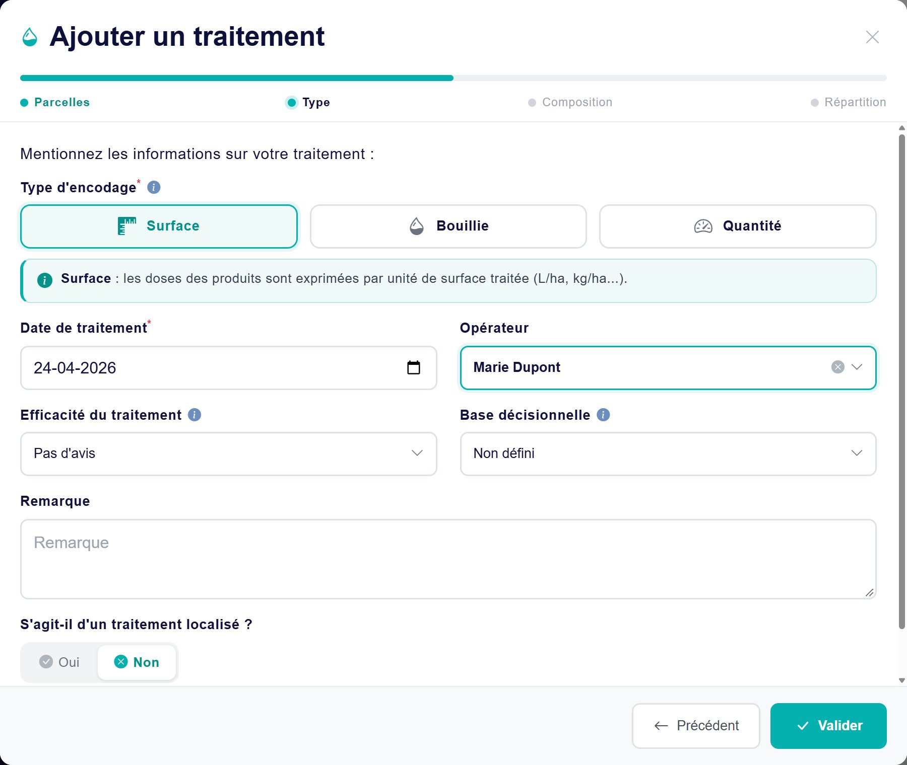
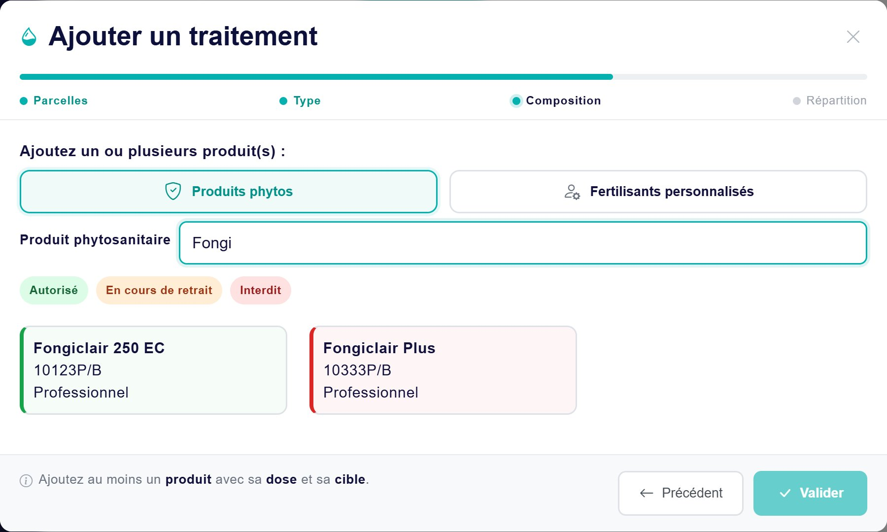
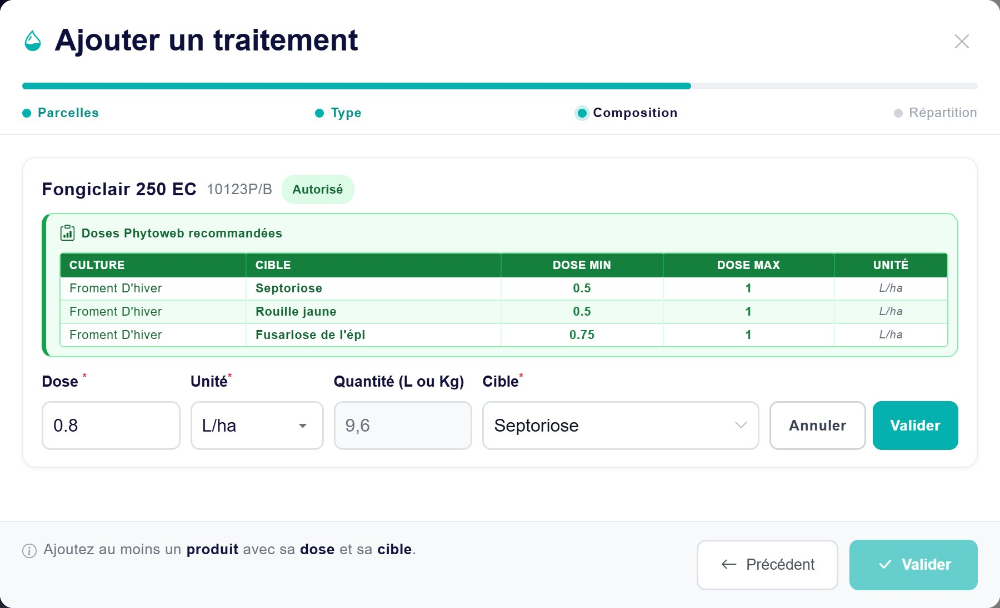
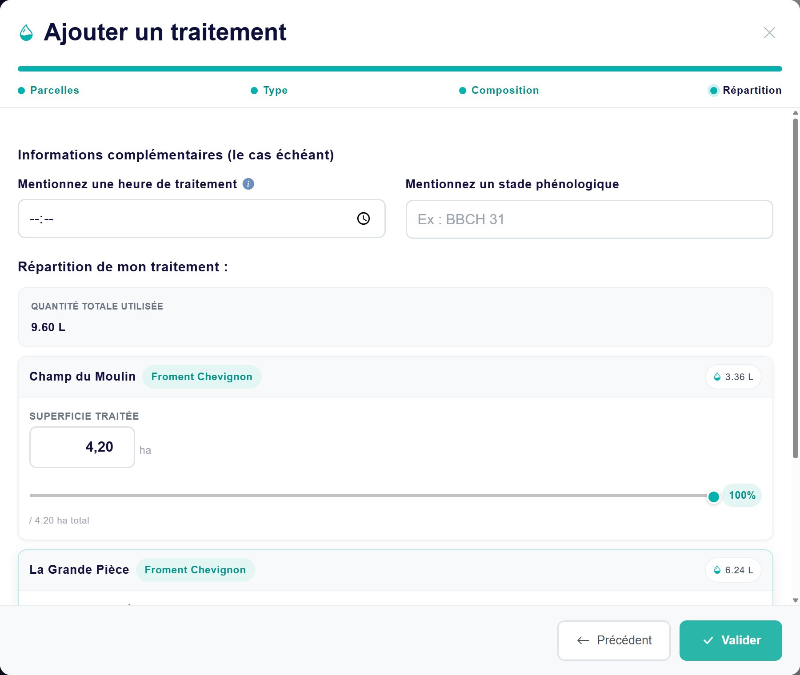
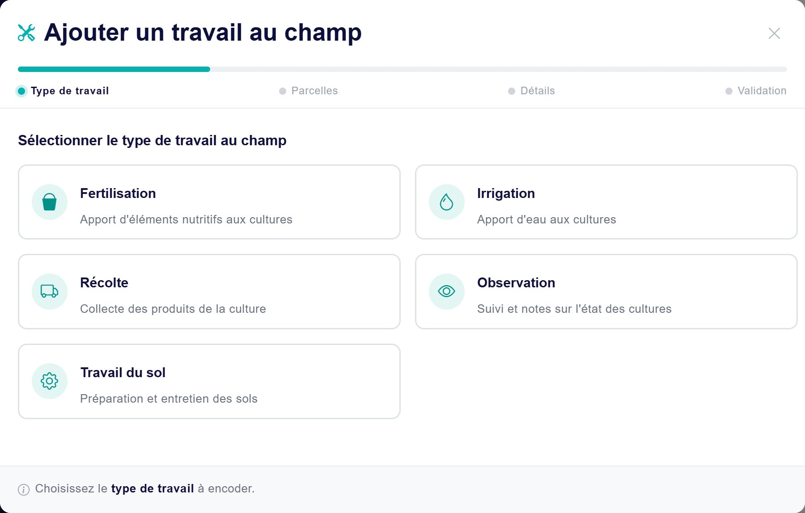
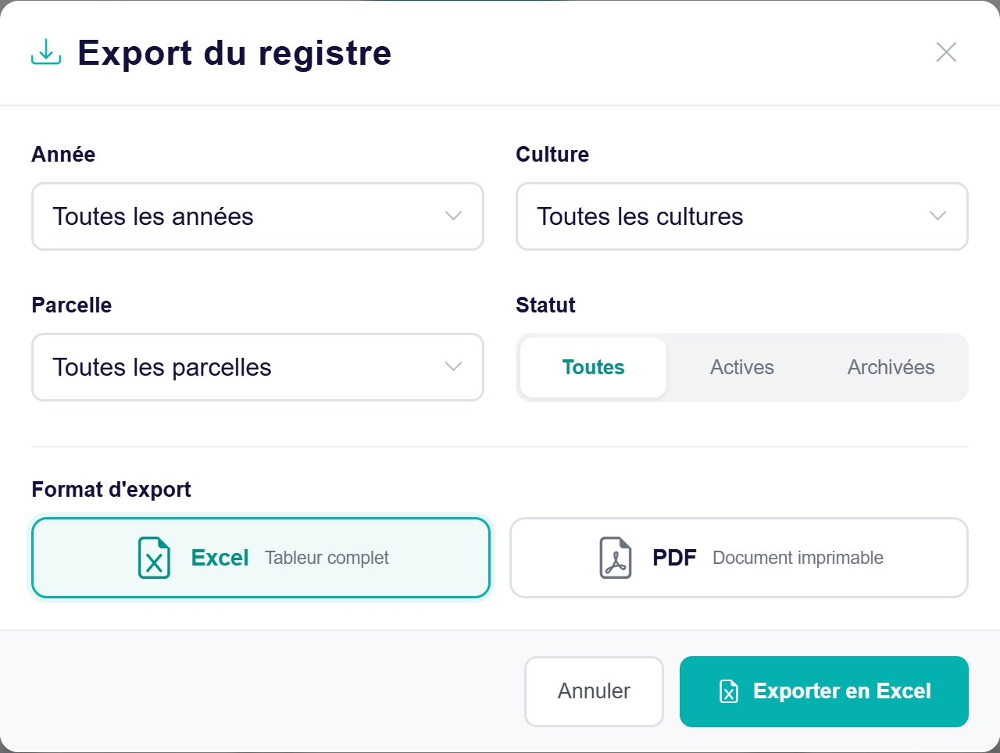
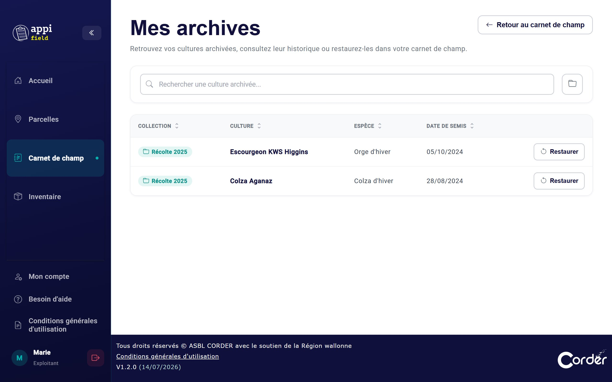
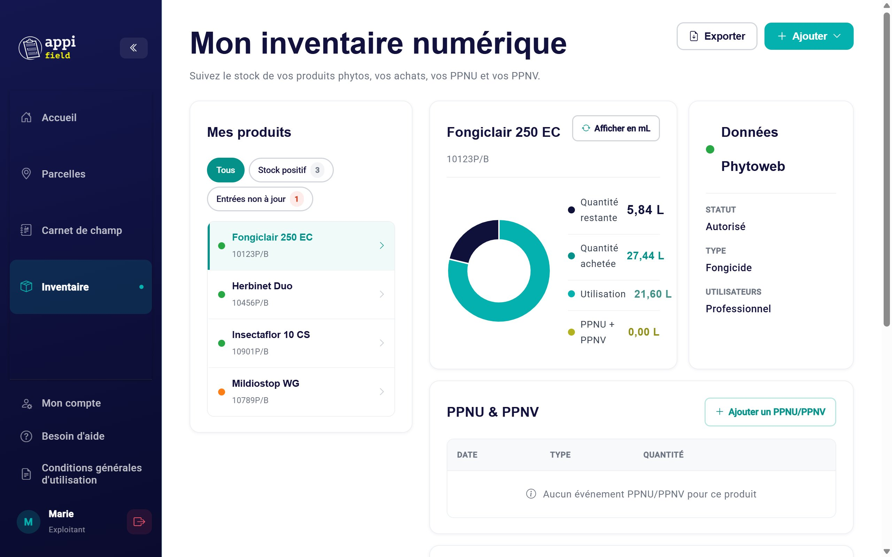
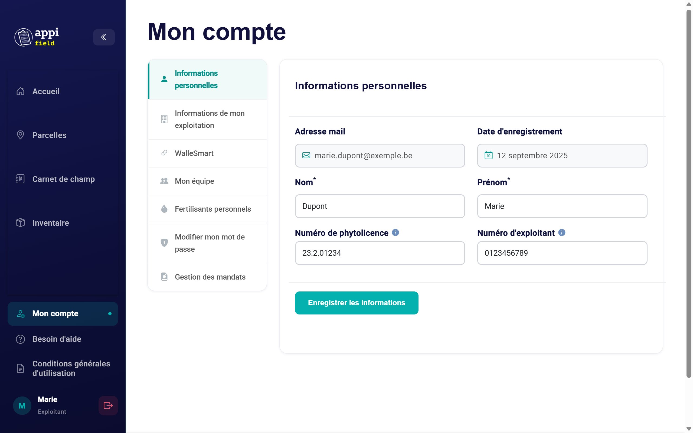
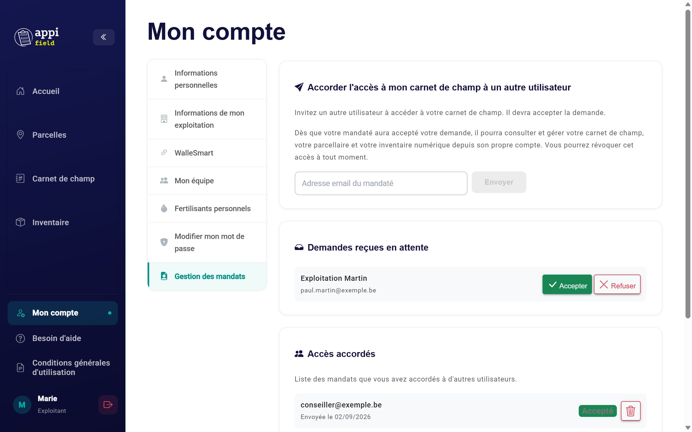

Toutes les fonctionnalités d'Appi'Field, écran par écran : parcelles, carnet de champ, traitements phytos, travaux au champ, exports, inventaire et compte.
Version d'octobre 2026
Pour une prise en main rapide, voir aussi le Guide de prise en main. Pour gérer le carnet de champ d'un autre exploitant : le Guide mandataire.
Appi'Field est un carnet de champ électronique gratuit. Il vous permet de tenir en ligne, au même endroit, tout ce qui concerne vos parcelles : vos cultures, vos traitements phytos, vos travaux au champ et le stock de votre local phyto. À partir de ces informations, il produit des exports de votre registre conformes aux exigences légales de 2026.
À qui s'adresse Appi'Field ?
À toute personne qui utilise des produits phytopharmaceutiques (PPP) dans le cadre de son métier, et qui doit donc tenir un registre de ses traitements :
les agriculteurs et producteurs de végétaux (grandes cultures, maraîchage, arboriculture, pépinières…) ;
les entrepreneurs agricoles, qui réalisent des pulvérisations chez leurs clients ;
les autres utilisateurs professionnels : gestionnaires d'espaces verts, entrepreneurs de parcs et jardins… ;
les conseillers ou collègues qui gèrent le carnet de champ d'un exploitant, avec son accord (voir « Les mandats », chapitre 13).
Aucune connaissance particulière en informatique n'est nécessaire : ce guide vous accompagne écran par écran.
Pourquoi un registre électronique ?
Depuis le 1er janvier 2026, le registre d'utilisation des produits phytos doit être tenu dans un format électronique, c'est-à-dire « lisible par une machine » : un fichier Excel, Word ou PDF convient, mais pas une photo ni un scan d'un carnet papier.
Règle
Ce que cela veut dire pour vous
Délai d'encodage
Chaque traitement doit être encodé dans les 7 jours qui suivent son application.
Traitement fait par un entrepreneur
L'entrepreneur vous transmet les informations du traitement (date, produit, culture, dose…) dans les 7 jours, pour que vous complétiez votre propre registre.
Durée de conservation
6 ans pour les producteurs de végétaux, 5 ans pour les entrepreneurs agricoles, 3 ans pour les autres utilisateurs professionnels.
Appi'Field vous aide à respecter ces règles : il vous guide pour encoder chaque traitement avec les informations demandées (culture selon Phytoweb, produit et numéro d'autorisation, dose, cible…), et il produit votre registre en Excel ou en PDF en quelques clics.
Le registre reste sous votre responsabilitéAppi'Field est un outil : c'est vous qui encodez les informations et qui restez responsable de votre registre. Relisez vos exports, et exportez régulièrement votre registre pour en garder une copie de votre côté (sur votre ordinateur, une clé USB…), pendant toute la durée de conservation.
Les détails de la législation (informations obligatoires, cas des entrepreneurs, exigences wallonnes) sont repris dans la page Besoin d'aide de l'application, rubrique « Législation – Nouveautés 2026 ».
Ce que vous pouvez faire avec Appi'Field
Fonction
En pratique
Chapitre
Gérer vos parcelles
Les dessiner sur une carte, les retrouver par adresse, ou les importer depuis votre déclaration PAC.
5 et 6
Suivre vos cultures
Indiquer ce qui est semé sur chaque parcelle, avec sa catégorie officielle Phytoweb.
7
Encoder vos traitements phytos
Produits recherchés dans la base Phytoweb, doses recommandées, avertissements si un produit est en retrait ou interdit.
8
Noter vos travaux au champ
Fertilisation, irrigation, récolte, observation, travail du sol.
9
Exporter votre registre
En Excel ou en PDF, pour vous-même ou lors d'un contrôle.
10
Tenir votre local phyto
Le stock de vos produits, mis à jour à chaque traitement, avec vos achats, PPNU et PPNV.
11
Travailler à plusieurs
Vos opérateurs, et l'accès donné à un conseiller ou à un collègue.
12 et 13
Qui est derrière Appi'Field ?
Appi'Field est développé par l'ASBL Corder, en collaboration avec le CePiCOP, avec le soutien de la Région wallonne. Son utilisation est entièrement gratuite.
Une question, un problème ? L'équipe vous répond :
par mail : registre@corder.be ;
par téléphone : 010/47.37.54, du lundi au vendredi, de 9h à 12h et de 14h à 16h.
Des formations à l'utilisation d'Appi'Field sont aussi organisées régulièrement : leurs dates sont affichées sur l'accueil de l'application (« Espace formation »).
Le vocabulaire
Terme
Ce que c'est
Parcelle
Un terrain de votre exploitation, localisé sur la carte (contour, point ou adresse). Elle a un nom, une superficie, une catégorie (plein air, sous-protection, traitement de semences) et, si vous l'avez, son code SIGEC.
Culture
Ce que vous cultivez sur une ou plusieurs parcelles : l'espèce et la variété, la date de semis, le précédent cultural, et sa catégorie Phytoweb.
Catégorie Phytoweb
Le nom officiel de la culture sur Phytoweb (ex. « Froment d'hiver »), avec son code EPPO. C'est elle qui permet de vérifier les produits autorisés et les doses.
Carnet de champ (registre)
L'ensemble de vos cultures et de tout ce qui y a été fait : traitements phytos et travaux au champ.
Traitement phyto
L'application d'un ou plusieurs produits sur des parcelles, encodée en surface, en bouillie ou en quantité.
Travail au champ
Toute autre intervention : fertilisation, irrigation, récolte, observation, travail du sol.
PPP
Produit phytopharmaceutique.
PPNU / PPNV
Produit phyto non utilisable / non valorisable : une quantité qui sort du stock sans être appliquée (périmé, interdit, emballage abîmé…).
Opérateur
Une personne qui réalise les traitements sur votre exploitation, avec son numéro de phytolicence.
Mandat
Un accès que vous donnez à un autre utilisateur (conseiller, collègue…) pour qu'il gère votre carnet de champ depuis son propre compte.
Ordinateur ou smartphone
Appi'Field fonctionne dans le navigateur, sur ordinateur, tablette et smartphone. Les fonctionnalités sont les mêmes partout, seule la présentation change. Dans ce guide, les encadrés bleus « Sur smartphone » signalent les différences. Vous pouvez aussi installer Appi'Field comme une application sur votre téléphone (chapitre 14).
Par où commencer ?
Le carnet de champ se construit dans cet ordre :
Créez vos parcelles (chapitres 5 et 6).
Ajoutez vos cultures sur ces parcelles (chapitre 7).
Encodez vos traitements et travaux sur ces cultures (chapitres 8 et 9).
Pourquoi cet ordre ?Un traitement s'encode toujours sur un couple « parcelle + culture ». Sans culture sur une parcelle, celle-ci n'apparaît pas au moment d'encoder un traitement.
2Créer son compte et se connecter
Ce chapitre vous accompagne pas à pas, de la création de votre compte jusqu'à votre première connexion. Comptez une dizaine de minutes.
Avant de commencer
Préparez ces informations. Seules celles marquées « obligatoire » sont indispensables : les autres peuvent être ajoutées plus tard.
Information
Obligatoire ?
Où la trouver
Une adresse mail que vous consultez
Oui
Vous allez y recevoir un code. Gardez votre boîte mail ouverte (sur l'ordinateur ou sur votre téléphone).
L'adresse et le code postal de l'exploitation
Oui
—
Le nom de l'exploitation
Oui
—
Votre numéro de phytolicence
Non, mais conseillé
Sur votre phytolicence. Vous pouvez la consulter sur phytolicence.be avec votre carte d'identité (lecteur de carte) ou itsme, ou y demander une copie en PDF par mail.
Votre numéro d'exploitant
Non
Si vous en avez un. À confirmer : de quel numéro s'agit-il (SIGeC, BCE) ?
Votre numéro de TVA
Non
Si vous n'en avez pas, laissez le champ vide.
Où commencer ?
Ouvrez Appi'Field dans votre navigateur (Chrome, Edge, Firefox ou Safari). La page d'accueil propose trois boutons :
Me créer un compte : vous n'avez pas encore de compte. C'est ce que nous faisons dans ce chapitre.
Me connecter : vous avez déjà un compte (voir « Se connecter » plus loin).
Me connecter avec WalleSmart : vous utilisez le portail WalleSmart (voir la fin du chapitre).
La page d'accueil, avant connexion.La même page sur smartphone.
L'inscription se fait en 3 étapes : créer le compte, valider votre adresse mail, puis compléter les informations de votre exploitation.
Étape 1 : créer votre compte
Cliquez sur Me créer un compte (ou, depuis la page de connexion, sur Créer un compte gratuitement).
Remplissez tous les champs marqués d'une étoile rouge* (voir le tableau ci-dessous).
Cochez la case « En me créant un compte, je consens aux conditions générales d'utilisation ». Le lien bleu permet de les lire.
Cliquez sur S'inscrire. Le bouton affiche « Inscription en cours… » : patientez quelques secondes.
Le formulaire de création de compte. Les champs marqués d'une étoile rouge sont obligatoires.
Les champs du formulaire
Champ
Ce qu'il faut mettre
Prénom* Nom de famille*
Votre prénom et votre nom. Ils s'affichent dans l'application (« Bienvenue, Marie ! »).
Adresse mail*
L'adresse qui vous servira à vous connecter. Elle doit avoir la forme nom@exemple.be. Les majuscules n'ont pas d'importance.
Confirmez votre adresse mail*
Retapez exactement la même adresse. C'est une vérification contre les fautes de frappe.
Mot de passe*
Au moins 8 caractères, dont 1 chiffre et 2 caractères spéciaux. Voir l'encadré ci-dessous.
Confirmez votre mot de passe*
Retapez exactement le même mot de passe.
Date de naissance*
Tapez-la sous la forme jour-mois-année, ou cliquez sur le petit calendrier à droite du champ.
Sexe*
Homme, Femme ou « Non spécifié » (choix par défaut, accepté).
Choisir un mot de passe accepté
Dès que vous cliquez dans le champ Mot de passe, une petite liste apparaît. Chaque règle passe au vert ✓ quand elle est respectée, et reste en rouge ✗ sinon.
Les lettres accentuées (é, è, à…) et le signe € ne comptent pas comme caractères spéciaux.
Ici, il manque encore deux caractères spéciaux.
Une méthode simplePrenez un mot facile à retenir, ajoutez une année et deux signes, par exemple sur le modèle « Motfacile + 4 chiffres + deux signes ». N'utilisez pas l'exemple d'un guide tel quel, et ne donnez votre mot de passe à personne.
Voir ce que vous tapezL'icône en forme d'œil, à droite du champ, affiche le mot de passe en clair. Cliquez à nouveau pour le masquer.
Si quelque chose ne va pas
Tant qu'une information manque ou est incorrecte, le bouton S'inscrire reste pâle et ne réagit pas. Un message rouge sous le champ concerné vous dit quoi corriger :
Les deux adresses mail ne sont pas identiques : le champ est entouré de rouge.
Message affiché
Que faire ?
« Champ obligatoire. »
Remplissez ce champ.
« Adresse mail invalide (ex. : nom@exemple.be). »
Vérifiez qu'il y a bien un @ et un point, sans espace.
« Les deux adresses mail ne correspondent pas. »
Retapez l'adresse de confirmation, lettre par lettre.
« Les deux mots de passe ne correspondent pas. »
Retapez le mot de passe de confirmation. Utilisez l'œil pour comparer.
« La date de naissance ne peut pas être dans le futur. »
Vérifiez l'année.
« Complétez les champs obligatoires (*) et acceptez les conditions générales pour vous inscrire. »
Un champ est vide, ou la case des conditions générales n'est pas cochée.
« Complétez correctement les champs obligatoires (*) pour vous inscrire. »
Tout est rempli, mais une règle n'est pas respectée : le plus souvent, le mot de passe.
« Un compte existe déjà pour cette adresse »Ce message s'affiche sur la page de connexion quand votre adresse mail est déjà inscrite. Vous avez donc déjà un compte : votre adresse est déjà remplie, tapez simplement votre mot de passe. Si vous ne connaissez plus votre mot de passe, utilisez Mot de passe oublié (voir plus loin).
Le message quand l'adresse est déjà inscrite.Sur smartphone : tout est rempli, le bouton « S'inscrire » est actif.
Étape 2 : valider votre adresse mail
Après S'inscrire, Appi'Field vous envoie un code de validation par mail, et affiche la page « Confirmez votre inscription ».
Sans fermer Appi'Field, ouvrez votre boîte mail (dans un autre onglet, ou sur votre téléphone).
Ouvrez le mail d'Appi'Field et repérez le code.
Revenez dans Appi'Field, tapez le code dans le champ Code de validation, puis cliquez sur Valider mon compte.
La page où taper le code reçu par mail.
Le code est valable 1 heurePassé ce délai, il ne fonctionne plus. Cette page n'a pas de bouton pour renvoyer un code : recommencez simplement l'inscription (étape 1) avec la même adresse mail pour en recevoir un nouveau.
Pas de mail ?Regardez dans le dossier Courrier indésirable (ou « Spam »). Vérifiez aussi que l'adresse tapée à l'étape 1 était la bonne. Si le code est refusé, un message vous prévient : vérifiez qu'il n'y a pas d'espace en trop et que vous utilisez le code du dernier mail reçu.
Dans la plupart des cas, vous passez directement à l'étape 3. Parfois, Appi'Field affiche : « Votre email a été validé ! Veuillez maintenant vous re-connecter pour finaliser la création de votre compte. » Cliquez sur OK, puis connectez-vous avec votre adresse mail et votre mot de passe : vous arrivez à l'étape 3.
Étape 3 : finaliser votre inscription
Cette dernière page demande les informations de votre exploitation.
La page « Finaliser mon inscription ».
Champ
Obligatoire ?
Ce qu'il faut mettre
Numéro de phytolicence
Non
Tapez seulement les chiffres : les points s'ajoutent tout seuls (ex. 23.2.00445). Vous pouvez le laisser vide si vous utilisez uniquement des produits qui ne demandent pas de phytolicence.
Numéro d'exploitant
Non
« Dans le cas où vous en avez un. » À confirmer
Adresse (rue et localité)
Oui
L'adresse du siège de l'exploitation, ex. « Rue des Tilleuls 8, Gembloux ».
Code postal
Oui
Un code postal belge : 4 chiffres, ex. 5030.
Numéro de TVA
Non
Tapez seulement les chiffres : « BE » et les points s'ajoutent tout seuls. Pas de TVA ? Laissez vide.
Nom de mon exploitation
Oui
Le nom de votre ferme ou de votre entreprise.
Pourquoi indiquer votre phytolicence ?Votre numéro de phytolicence et votre numéro d'exploitant sont repris sur chaque ligne du registre que vous exporterez. Mieux vaut les indiquer dès maintenant. Vous pourrez les ajouter ou les corriger plus tard dans Mon compte.
Cliquez sur Suivant. Le bouton affiche « Enregistrement… », puis vous arrivez sur l'accueil de votre exploitation : votre compte est prêt.
Un code postal incomplet : le champ est entouré de rouge.
Si quelque chose ne va pas
Message
Que faire ?
« Champ obligatoire. »
Remplissez ce champ.
« Code postal belge : 4 chiffres. »
Tapez 4 chiffres, sans lettre ni espace.
« L'enregistrement n'a pas abouti. Vérifiez votre connexion puis réessayez. »
Vérifiez votre connexion internet, puis cliquez à nouveau sur Suivant.
Sur smartphonePendant cette étape, la barre du bas est masquée et le bouton Suivant reste collé en bas de l'écran.
Vous avez fermé la page avant de finir ?Pas de souci : à votre prochaine connexion, vous arriverez directement sur l'accueil, et l'application ne vous redemandera pas ces informations. Complétez-les vous-même dans Mon compte › Informations de mon exploitation et Informations personnelles (chapitre 12).
Juste après l'inscription : ajoutez votre équipe
Au moment d'encoder un traitement, Appi'Field vous demandera qui l'a réalisé (l'« opérateur »). La liste des opérateurs est vide au départ, même pour vous : ajoutez-vous, ainsi que toute personne qui traite sur votre exploitation.
Sur l'accueil, descendez jusqu'à l'encadré Mon équipe (ou cliquez sur le raccourci Mon équipe).
Cliquez sur Nouvel opérateur.
Tapez le nom et prénom* et, si la personne en a une, son numéro de phytolicence.
Cliquez sur Enregistrer.
La phytolicence de l'opérateurElle n'est pas obligatoire pour encoder, mais elle apparaît dans le registre exporté, à côté du nom de l'opérateur (« Marie Dupont (23.2.01234) »). Indiquez-la si la personne en a une.
Se connecter
Sur la page d'accueil, cliquez sur Me connecter (sur ordinateur, vous pouvez aussi cliquer sur Connexion en bas du menu de gauche ; sur smartphone, sur l'icône de profil en haut à droite).
Tapez votre adresse mail et votre mot de passe.
Cliquez sur Connexion. Vous arrivez sur l'accueil de votre exploitation.
Le message quand l'adresse ou le mot de passe est incorrect.La page de connexion sur smartphone.
« L'adresse mail ou le mot de passe mentionné n'est pas correct »
Vérifiez l'adresse mail : une lettre en trop ou en moins suffit à bloquer.
Le mot de passe, lui, fait la différence entre majuscules et minuscules. Vérifiez que la touche Verr. Maj (⇪) de votre clavier n'est pas allumée.
Cliquez sur l'œil pour voir ce que vous avez tapé.
Toujours bloqué ? Utilisez Mot de passe oublié.
Rester connecté, être déconnecté
Par sécurité, votre session ne dure pas indéfiniment. Quand elle se termine, Appi'Field vous ramène à la page d'accueil avec le bandeau jaune « Session expirée » : reconnectez-vous simplement.
Appi'Field vérifie aussi votre connexion toutes les 30 minutes. Si internet est coupé à ce moment-là, vous êtes déconnecté.
Ce qui était déjà enregistré est conservé. Un formulaire en cours, pas encore validé, est perdu : pensez à enregistrer au fur et à mesure.
Le bandeau « Session expirée ». La croix à droite le ferme.
Se déconnecter
Sur ordinateur : l'icône rouge de sortie, à côté de votre nom, en bas du menu de gauche. Sur smartphone : Plus › Déconnexion.
Ordinateur partagéSur un ordinateur que d'autres personnes utilisent, déconnectez-vous toujours en partant : sinon, la personne suivante aura accès à votre carnet de champ.
Mot de passe oublié
Sur la page de connexion, cliquez sur Mot de passe oublié.
Tapez l'adresse mail de votre compte, puis cliquez sur Envoyer le lien.
Vous recevez un code de récupération par mail. Tapez-le, puis cliquez sur Valider. Pas reçu ? Regardez dans les courriers indésirables, ou cliquez sur Renvoyer un mail.
Choisissez votre nouveau mot de passe (mêmes règles qu'à l'inscription), tapez-le deux fois, puis cliquez sur Enregistrer.
Connectez-vous avec ce nouveau mot de passe.
1. Votre adresse mail.2. Le code reçu par mail.
3. Le nouveau mot de passe.
Message
Que faire ?
« Le code de récupération que vous avez introduit n'est pas correct »
Vérifiez le code, et utilisez celui du dernier mail reçu.
« Le serveur ne répond pas. Veuillez réessayer dans quelques instants. »
Vérifiez votre connexion internet, attendez une minute et réessayez.
Vous êtes connecté et voulez simplement changer de mot de passe ? Passez par Mon compte › Modifier mon mot de passe (chapitre 12).
Se connecter avec WalleSmart
Si vous utilisez déjà le portail WalleSmart (WES), vous pouvez y ouvrir Appi'Field directement, sans retaper votre mot de passe. Il faut d'abord lier vos deux comptes, une seule fois.
Lier vos comptes (une seule fois)
Connectez-vous à Appi'Field comme d'habitude.
Allez dans Mon compte › WalleSmart.
Cliquez sur Lier mon compte WalleSmart : le portail WalleSmart s'ouvre dans un nouvel onglet. Suivez ses indications.
Revenez dans Mon compte › WalleSmart : le message « Votre compte est déjà lié à un compte WalleSmart » confirme la liaison.
Mon compte › WalleSmart, avant la liaison.
La même adresse mailLa liaison se fait par votre adresse mail : utilisez la même dans Appi'Field et dans WalleSmart.
Ensuite, à chaque fois
Ouvrez votre tableau de bord WalleSmart et cliquez sur Appi'Field : l'application s'ouvre, déjà connectée. Depuis la page d'accueil d'Appi'Field, le bouton Me connecter avec WalleSmart ouvre lui aussi le portail WalleSmart. Si un message « Token invalide ou expiré » s'affiche, repassez par WalleSmart ou connectez-vous avec votre mot de passe.
Questions fréquentes sur l'inscription et la connexion
Le bouton « S'inscrire » reste pâle alors que tout est rempli.
Le plus souvent, c'est le mot de passe : il lui manque un chiffre ou un deuxième caractère spécial. Cliquez dans le champ Mot de passe pour voir la liste des règles. Vérifiez aussi la case des conditions générales.
Je n'ai pas reçu le code de validation.
Regardez dans les courriers indésirables. Après 1 heure, le code expire : recommencez l'inscription avec la même adresse.
Je n'ai pas de numéro de TVA.
Laissez le champ vide, il est facultatif.
Je me suis trompé dans mon nom ou mon numéro de phytolicence.
Corrigez-les dans Mon compte › Informations personnelles.
Ma phytolicence a été renouvelée.
Un renouvellement peut donner un nouveau numéro. Mettez-le à jour dans Mon compte (votre numéro) et dans Mon équipe (celui de l'opérateur).
Je voudrais changer l'adresse mail de mon compte.
L'adresse mail n'est pas modifiable dans l'application. Contactez le support (chapitre 15).
3Se repérer dans l'application
Une fois connecté, vous naviguez entre les pages grâce au menu. Il se présente différemment sur ordinateur et sur smartphone, mais il mène aux mêmes endroits.
Les pages principales
Page
À quoi elle sert
Chapitre
Accueil
Le tableau de bord de votre exploitation : chiffres clés, raccourcis, carte, équipe, formations, actualités.
4
Parcelles
La liste et la carte de vos parcelles.
5 et 6
Carnet de champ
Vos cultures, traitements, travaux, exports et archives.
7 à 10
Inventaire
Le stock de votre local phyto.
11
Mon compte
Vos informations, votre exploitation, votre équipe, votre mot de passe, les mandats.
12
Besoin d'aide
Questions fréquentes, vidéos et contacts du support.
15
Sur ordinateur : le menu de gauche
Le menu de gauche.
Le menu reste affiché à gauche sur toutes les pages. De haut en bas :
Le logo Appi'Field : un clic vous ramène à l'accueil.
La flèche « « » : replie le menu (voir ci-dessous).
Le choix de l'exploitation, seulement si quelqu'un vous a donné accès à son exploitation (voir plus bas).
Les pages : Accueil, Parcelles, Carnet de champ, Inventaire.
En bas : Mon compte, Besoin d'aide, Conditions générales d'utilisation.
Votre nom (un clic ouvre Mon compte) et, à droite, le bouton rouge de déconnexion.
La page où vous êtes est mise en évidence dans le menu (fond coloré et petit point).
Replier le menu
Sur un petit écran d'ordinateur, vous pouvez gagner de la place : cliquez sur la flèche « « » en haut du menu. Il ne garde alors que les icônes. Passez la souris sur une icône pour voir le nom de la page. Pour le déplier, cliquez sur la flèche « » ».
Le menu replié : seules les icônes restent visibles.
Bon à savoirAppi'Field se souvient de votre choix (menu replié ou déplié) d'une page à l'autre. Après une déconnexion, le menu revient déplié.
Sur smartphone : la barre du bas et le menu « Plus »
L'accueil sur smartphone, avec la barre du bas.
La barre du bas
Elle reste toujours visible en bas de l'écran, avec les 4 pages principales : AccueilParcellesCarnetInventaire, et le bouton Plus. La page où vous êtes est surlignée.
La barre du haut
Sur les 4 pages principales : le logo à gauche, et l'icône de profil à droite (elle ouvre Mon compte).
Sur les autres pages (Ma carte, Mes archives, Mon compte…) : une flèche ← suivie du nom de la page.
Le menu « Plus »
Touchez Plus : un panneau monte depuis le bas de l'écran. Il contient :
l'exploitation active, si vous avez accès à l'exploitation de quelqu'un d'autre ;
Pour fermer le panneau sans rien choisir, touchez la partie grisée de l'écran, au-dessus du panneau.
Le menu « Plus ».
La flèche de retour ←
La flèche ← et le nom de la page.
Touchez la flèche ← pour revenir à la page précédente. Si vous êtes arrivé directement sur la page (par exemple depuis un favori), la flèche vous emmène à la page « parente » : de Ma carte vers Parcelles, de Mes archives vers le Carnet de champ, sinon vers l'accueil.
Le bouton ↑Sur les longues pages, un bouton rond avec une flèche vers le haut apparaît en bas à droite : il vous ramène en haut de la page.
Changer d'exploitation
Cette partie ne vous concerne que si un autre exploitant vous a donné accès à son carnet de champ (un mandat, voir chapitre 13). Sinon, ce choix n'apparaît pas.
Le choix de l'exploitation, en haut du menu.
Cliquez sur le nom de l'exploitation en haut du menu (sur smartphone : Plus › Exploitation active).
Choisissez Mon exploitation ou celle de l'exploitant concerné.
La page se recharge : les pages Parcelles, Carnet de champ et Inventaire affichent maintenant l'exploitation choisie.
Vérifiez avant d'encoderLe nom de l'exploitation active est toujours affiché en haut du menu. Jetez-y un œil avant d'ajouter un traitement, pour l'encoder dans le bon carnet.
Quand vous fermez l'onglet (ou le navigateur), Appi'Field oublie votre choix : à la réouverture, vous êtes de retour sur Mon exploitation. C'est une sécurité, pour ne pas encoder par erreur dans le carnet de quelqu'un d'autre.
Mon compte affiche toujours vos informations, même quand vous travaillez dans l'exploitation de quelqu'un d'autre.
Une page introuvable ?
Si vous tapez une mauvaise adresse ou suivez un lien qui n'existe plus, Appi'Field affiche « Page introuvable ». Trois boutons vous remettent sur le bon chemin :
Page précédente : là où vous étiez ;
Retour à l'accueil ;
Besoin d'aide ?.
4L'accueil
L'accueil est la première page que vous voyez après la connexion. C'est le tableau de bord de votre exploitation : en un coup d'œil, vous savez où vous en êtes, et vous accédez à tout le reste.
Le haut de l'accueil : les chiffres clés, l'accès rapide et la carte.
De haut en bas, l'accueil contient : les chiffres clés, l'accès rapide, la carte de vos parcelles, votre équipe, les formations et les actualités.
Les chiffres clés
Encadré
Ce qu'il compte
Parcelles actives
Le nombre de toutes vos parcelles, et leur superficie totale en hectares (les ares et les m² sont convertis automatiquement).
Cultures en cours
Le nombre de cultures de votre carnet, sans les cultures archivées. Si vous n'en avez qu'une, son nom s'affiche.
Interventions ce mois
Le nombre de traitements phytos et de travaux au champ dont la date tombe dans le mois en cours (du 1er au dernier jour du mois), et la date de la dernière intervention.
Un chiffre qui ne bouge pas ?Les chiffres se mettent à jour chaque fois que vous revenez sur l'accueil. Une intervention encodée avec une date du mois précédent n'est pas comptée dans « ce mois ».
L'accès rapide
Trois grandes cartes mènent aux pages les plus utilisées :
Gérer mon carnet de champ : la page Carnet de champ ;
Mon local phyto numérique : la page Inventaire ;
Organiser mes parcelles : la page Parcelles.
Sur smartphone : deux raccourcis en plusEncoder un traitement ouvre directement le formulaire d'un nouveau traitement, et Exporter le registre ouvre directement la fenêtre d'export. Pratique au bord du champ.
Sous les cartes, quatre petits boutons font défiler la page jusqu'à la section concernée : Besoin d'aide (ouvre la page d'aide), Mon équipe, Espace formation et Actualités.
Ma carte parcellaire
Un aperçu de toutes vos parcelles sur une carte. La carte se centre automatiquement sur elles.
Les parcelles dessinées apparaissent avec leur contour ; celles placées par un point ou par une adresse, avec un rond.
Cliquez sur une parcelle pour voir son nom et sa superficie.
Sur ordinateur, les boutons + et − (ou la molette de la souris) zooment.
Voir toutes mes parcelles ouvre la page Parcelles.
Sur smartphoneLa carte de l'accueil est un simple aperçu : on ne peut ni la déplacer ni zoomer, pour ne pas gêner le défilement de la page. Pour travailler sur la carte, touchez Voir toutes mes parcelles.
La carte et le début de « Mon équipe » sur smartphone.
Mon équipe
La liste des opérateurs : les personnes qui réalisent les traitements sur votre exploitation, vous compris. Chaque traitement que vous encoderez sera attribué à l'un d'eux.
Deux opérateurs, avec leur numéro de phytolicence.
Ajouter un opérateur
Cliquez sur Nouvel opérateur.
Tapez son nom et prénom (obligatoire).
Tapez son numéro de phytolicence s'il en a un : seulement les chiffres, les points s'ajoutent tout seuls.
Cliquez sur Enregistrer.
Modifier ou supprimer
Le crayon rouvre le formulaire : corrigez puis Mettre à jour.
La corbeille supprime l'opérateur, après confirmation.
Ne supprimez pas un opérateur qui a déjà traitéSi vous supprimez un opérateur, son nom disparaît de tous ses traitements passés dans le registre exporté, et le recréer ne le remet pas. Supprimez seulement un opérateur ajouté par erreur, qui n'a encore réalisé aucun traitement.
Le formulaire « Nouvel opérateur ».
Message
Que faire ?
« Le nom et prénom est obligatoire. »
Tapez le nom de l'opérateur avant d'enregistrer.
« Erreur lors de l'enregistrement. » / « Erreur lors de la mise à jour. »
Vérifiez votre connexion internet et réessayez.
Pourquoi la phytolicence ?Elle n'est pas obligatoire, mais elle apparaît dans le registre exporté, à côté du nom de l'opérateur. Indiquez-la si la personne en a une, et mettez-la à jour quand sa phytolicence est renouvelée.
Vous retrouvez la même liste dans Mon compte › Mon équipe : les deux endroits sont reliés.
Espace formation
Les prochaines formations à Appi'Field et les vidéos disponibles. Sur un grand écran, les flèches à gauche et à droite font défiler les cartes ; sur smartphone, elles sont toutes affichées l'une sous l'autre.
Sur ordinateur : deux sessions à venir et deux rediffusions.Sur smartphone, les unes sous les autres.
Carte
Ce que vous y voyez
Le bouton « Informations »
Session à venir (une date : « 29 octobre »)
Le titre, le lieu (une ville, ou « en ligne ») et l'horaire.
Ouvre la page de la session, où vous pouvez vous inscrire.
Rediffusion (un globe 🌐 et l'année)
Le titre et la durée de la vidéo.
Ouvre la vidéo (YouTube), à regarder quand vous voulez.
Ces liens s'ouvrent dans un nouvel onglet : Appi'Field reste ouvert dans le premier.
Actualités
Les 4 dernières actualités de Walakis, la plateforme wallonne de la connaissance et de l'innovation agricole (Réseau wallon de la PAC et Service public de Wallonie). Chaque carte affiche le titre, la date et un résumé. Lire la suite ouvre l'article complet sur le site de Walakis, dans un nouvel onglet.
Exemple d'affichage (les titres réels viennent du site de Walakis).
Si les actualités ne peuvent pas être chargées, le message « Impossible de charger les actualités. Veuillez réessayer plus tard. » s'affiche : le reste d'Appi'Field fonctionne normalement.
Le bas de page
Tout en bas de chaque page : la mention de l'ASBL Corder et du soutien de la Région wallonne, un lien vers les Conditions générales d'utilisation, et le numéro de version d'Appi'Field.
Questions fréquentes sur l'accueil
Mon accueil est vide, tous les chiffres sont à 0.
C'est normal au début : créez vos parcelles (chapitre 5), puis vos cultures (chapitre 7). Les chiffres et la carte se rempliront.
Une parcelle n'apparaît pas sur la carte de l'accueil.
Elle n'a ni contour, ni point, ni adresse localisée. Ouvrez-la dans la page Parcelles et localisez-la (chapitres 5 et 6).
Je ne vois pas le choix de l'exploitation dans le menu.
Il n'apparaît que si quelqu'un vous a donné accès à son exploitation et que vous avez accepté la demande (chapitre 13).
J'ai supprimé un opérateur par erreur.
Recréez-le avec Nouvel opérateur pour vos prochains traitements. Ses traitements passés n'afficheront plus son nom dans le registre exporté : ouvrez-les et choisissez à nouveau l'opérateur (chapitre 8).
5Mes parcelles
Vos parcelles sont la base de tout le carnet de champ : chaque culture est placée sur une ou plusieurs parcelles, et chaque traitement est encodé sur une parcelle. Ce chapitre explique comment les créer, les retrouver, les modifier et les supprimer depuis la page Parcelles. Le travail sur la carte (dessiner un contour, placer un point, le parcellaire PAC) est expliqué au chapitre 6.
Trois façons de créer vos parcelles
Méthode
Quand la choisir
Ce que vous obtenez
Importer un fichier GML
Vous avez rentré votre déclaration de superficie (PAC) sur PAC on Web : c'est le plus rapide, toutes vos parcelles arrivent d'un coup.
Le contour exact de chaque parcelle, et sa superficie.
Dessiner sur la carte
Vous n'avez pas de fichier GML, mais vous savez repérer vos parcelles sur une carte ou une vue satellite.
Le contour que vous avez tracé (chapitre 6).
Par adresse
Pour aller vite, ou pour une serre, un hangar, une installation qui a une adresse.
Un point à l'adresse choisie, sans contour.
Pourquoi bien localiser vos parcelles ?Le registre doit indiquer où chaque produit a été utilisé. Appi'Field reprend dans vos exports l'adresse ou les coordonnées de chaque parcelle. Plus la parcelle est bien placée, plus votre registre est précis.
La page « Mes parcelles »
Cliquez sur Parcelles dans le menu.
La page « Mes parcelles ».
Les trois chiffres du haut
Parcelles : le nombre de parcelles enregistrées.
Superficie totale : la somme de toutes vos parcelles, en hectares. Les parcelles encodées en ares ou en m² sont converties automatiquement.
Catégories : le nombre de catégories utilisées, et combien de parcelles dans chacune.
La liste des parcelles
Chaque ligne montre le nom de la parcelle, sa catégorie et sa superficie, avec un crayon pour la modifier. La liste affiche 20 parcelles par page ; les flèches en bas passent à la page suivante.
La liste, avec deux parcelles importées d'un fichier GML (en bas).
Pour…
Faites ceci
Retrouver une parcelle
Tapez une partie de son nom dans « Rechercher une parcelle… ». La croix vide la recherche.
N'afficher qu'une catégorie
Cliquez sur la catégorie (« Plein air », « Sous-protection »…). Toutes réaffiche tout. Seules les catégories que vous utilisez apparaissent.
Trier
Cliquez sur le titre de la colonne Parcelle (ordre alphabétique) ou Superficie. Un premier clic trie dans un sens, un deuxième dans l'autre, un troisième annule le tri.
Voir les parcelles sur une carte
La petite carte à droite montre toutes vos parcelles. Voir ma carte ouvre la grande carte (chapitre 6).
Le tri par superficieIl compare les nombres tels qu'ils sont affichés, sans tenir compte de l'unité : une parcelle de « 25 a » (0,25 ha) est classée après une parcelle de « 7,8 ha ». Si vous mélangez les unités, gardez-le en tête.
Aucune parcelle pour l'instant ?
Tant que vous n'avez créé aucune parcelle, la page affiche « Aucune parcelle n'a été détectée ». Le bouton Créer ma première parcelle ouvre directement le formulaire « par adresse ». Pour dessiner ou importer, utilisez plutôt le bouton Ajouter une parcelle en haut à droite.
Ajouter une parcelle
Le menu « Ajouter une parcelle ».
Cliquez sur Ajouter une parcelle, en haut à droite. Trois choix apparaissent :
Dessiner sur ma carte : ouvre la grande carte, où vous tracez le contour (chapitre 6) ;
Par adresse : ouvre le formulaire décrit ci-dessous ;
Importer mes parcelles : charge un fichier .GML (voir plus loin).
Ajouter une parcelle par adresse
Ajouter une parcelle › Par adresse.
Tapez le nom de la parcelle et sa superficie, et choisissez l'unité.
Tapez le début de l'adresse (au moins 3 lettres), puis cliquez sur la bonne adresse dans la liste qui apparaît.
Choisissez une catégorie.
Cliquez sur Enregistrer. Le message « La parcelle … a été créée avec succès ! » confirme l'enregistrement.
Après quelques lettres, les adresses trouvées s'affichent : cliquez sur la bonne.Sur smartphone, le formulaire s'ouvre en panneau.
Les champs du formulaire
Champ
Ce qu'il faut mettre
Nom de la parcelle*
Le nom que vous utilisez au quotidien (« Champ du Moulin », « Serre nord »…). C'est lui qui apparaîtra dans le carnet et dans le registre : choisissez un nom clair.
Superficie*
Un nombre, par exemple 2.5.
Unité*
Ha (hectare), A (are) ou M² (mètre carré). Pour rappel : 1 ha = 100 a = 10 000 m².
Adresse de la parcelle*
Une adresse en Belgique, à choisir dans la liste proposée (5 propositions au maximum). Si la rue exacte n'existe pas, choisissez la rue ou le village le plus proche.
Catégorie de parcelle*
Plein air, Sous-protection (serre, tunnel) ou Traitement de semences. La catégorie sert uniquement à trier et filtrer vos parcelles : elle n'apparaît pas dans le registre.
L'adresse doit être choisie dans la listeTaper l'adresse ne suffit pas : il faut cliquer sur une des propositions. C'est elle qui place la parcelle sur la carte. Si vous retouchez l'adresse après l'avoir choisie, il faut la choisir à nouveau.
Une parcelle créée par adresse est représentée par un point sur la carte, à l'adresse choisie. Pour avoir son contour exact, dessinez-la plutôt sur la carte (chapitre 6).
Si quelque chose ne va pas
Tant qu'il manque une information, le bouton Enregistrer reste pâle. Sous le formulaire, la ligne « À compléter : … » liste ce qui manque.
L'adresse a été tapée mais pas choisie dans la liste, et la catégorie manque.
Message
Que faire ?
« Champ obligatoire. »
Remplissez ce champ.
« Veuillez sélectionner une adresse dans la liste proposée. » « À compléter : adresse à choisir dans la liste »
Cliquez dans le champ adresse, attendez les propositions et cliquez sur l'une d'elles. Aucune proposition ? Tapez moins de mots (la rue et la commune suffisent).
« Erreur lors de l'ajout de la parcelle. Veuillez réessayer. »
Vérifiez votre connexion internet et réessayez.
Importer vos parcelles depuis votre déclaration PAC (fichier GML)
Un fichier GML est un fichier qui contient le dessin de vos parcelles. Depuis 2026, PAC on Web permet de l'exporter pour l'utiliser dans un logiciel de carnet de champ comme Appi'Field.
1. Récupérer le fichier sur PAC on Web
Connectez-vous à PAC on Web (application eDS de déclaration de superficie) avec votre carte d'identité, itsme ou un code reçu par SMS.
Ouvrez votre déclaration. L'export GML est disponible après la soumission de la déclaration.
Cliquez sur Sauver : PAC on Web conseille de sauvegarder avant d'exporter, pour obtenir un fichier complet.
Cliquez sur l'icône Exporter et choisissez le format GML. Enregistrez le fichier sur votre ordinateur (souvent dans le dossier Téléchargements).
Le navigateur bloque l'export ?Le manuel de PAC on Web précise que, pour certains exports, il faut autoriser votre navigateur à ouvrir les fenêtres « pop-up ». Pour toute question sur PAC on Web, consultez son manuel d'aide sur le portail de l'agriculture wallonne.
Appi'Field reconnaît aussi le fichier GML de la MAEC « sol » (MR14), celui que vous importez dans Requacarto.
2. L'importer dans Appi'Field
Sur la page Parcelles : Ajouter une parcelle › Importer mes parcelles.
Une fenêtre de votre ordinateur s'ouvre : choisissez le fichier .gml (10 Mo maximum) et cliquez sur Ouvrir.
Patientez quelques secondes. Le message « Import réussi ! … parcelles importées. » indique combien de parcelles ont été créées.
3. Ce que vous obtenez
Information
D'où elle vient
Le contour
Le dessin exact de la parcelle, repris du fichier.
La superficie
Calculée par Appi'Field à partir du contour, en hectares. Elle peut différer légèrement de la superficie déclarée.
Le nom
Le nom contenu dans le fichier, ou un nom automatique comme « Parcelle_48213_1 ».
La catégorie
Déduite du fichier : « Terre arable », « Prairie permanente », « Prairie temporaire », « Culture permanente », « Haie »… ou « Plein air » par défaut.
Après l'import : renommez vos parcellesUn nom comme « Parcelle_48213_1 » n'est pas parlant. Ouvrez chaque parcelle avec le crayon et donnez-lui le nom que vous utilisez, avant d'encoder vos cultures et traitements (voir « Renommer une parcelle » plus bas). La catégorie, elle, peut rester telle quelle : elle ne sert qu'au tri.
N'importez qu'une foisImporter deux fois le même fichier crée vos parcelles en double. Si c'est arrivé, supprimez les doublons (voir « Supprimer des parcelles »), avant de les utiliser dans votre carnet.
Message
Que faire ?
« Veuillez sélectionner un fichier GML (.gml) »
Le fichier choisi n'est pas un .gml : vérifiez que vous avez bien exporté au format GML (et pas Excel, XML ou SHP).
« Le fichier est trop volumineux (maximum 10 MB) »
Contactez le support (chapitre 15).
« Erreur dans le fichier GML : Format GML non reconnu… » ou « …Aucune parcelle exploitable trouvée… »
Le fichier ne vient pas de PAC on Web ou est incomplet : exportez-le à nouveau, après avoir sauvé votre déclaration.
Votre session a expiré : reconnectez-vous et recommencez l'import.
Modifier une parcelle
Cliquez sur le crayon de la parcelle.
Le formulaire « Modifier la parcelle » s'ouvre, déjà rempli. Corrigez ce que vous voulez.
Cliquez sur Mettre à jour.
Changer d'unité convertit automatiquement la superficie : 2 ha deviennent 200 a.
Pour une parcelle importée (GML, PAC) ou placée par un point, l'adresse n'est pas demandée : elle est localisée par son contour ou ses coordonnées.
Pour modifier le contour d'une parcelle, passez par la carte (chapitre 6).
Une parcelle dessinée : ici, l'application demande une adresse.
Une parcelle dessinée vous demande une adresse ?Pour une parcelle dont vous avez dessiné le contour, le formulaire indique « À compléter : adresse » et le bouton Mettre à jour reste pâle. Tapez l'adresse la plus proche de la parcelle (la rue ou le village), choisissez-la dans la liste, puis cliquez sur Mettre à jour. Le contour de la parcelle est conservé.
Renommer une parcelle
Vous pouvez changer le nom d'une parcelle à tout moment. Mais les traitements et travaux déjà encodés gardent l'ancien nom, y compris dans le registre exporté. Le plus simple est donc de donner leur nom définitif à vos parcelles avant de commencer à encoder.
Supprimer des parcelles
Une parcelle : ouvrez-la avec le crayon, puis Supprimer la parcelle. Appi'Field demande confirmation : « Êtes-vous sûr de vouloir supprimer … ? Cette action est irréversible. »
Plusieurs parcelles : cochez-les dans la liste, puis cliquez sur Supprimer la sélection (le nombre de parcelles cochées s'affiche dans le bouton). Confirmez.
Filtre « Plein air », tri par superficie, et deux parcelles cochées.
La case tout en haut de la liste coche (ou décoche) toutes les parcelles de la page affichée, pas celles des autres pages.
Si certaines parcelles n'ont pas pu être supprimées, un message l'indique (« 3 parcelles supprimées sur 4 »).
Ne supprimez pas une parcelle déjà utiliséeLa suppression est définitive. Si la parcelle a déjà des cultures ou des traitements, ceux-ci restent dans votre carnet, mais l'adresse et les coordonnées de la parcelle disparaissent de leurs lignes dans le registre exporté, alors que la localisation est une information obligatoire. Supprimez seulement une parcelle créée par erreur ou en double, jamais utilisée.
Sur smartphone
Une carte par parcelle ; la deuxième est sélectionnée.
Chaque parcelle est une carte : nom, catégorie, superficie et localisation (adresse ou coordonnées).
Toucher une carte la sélectionne (pour la supprimer) : elle se colore et sa case se coche. Touchez-la à nouveau pour la désélectionner.
Pour ouvrir une parcelle, touchez son crayon.
Le bouton rond + en bas à droite ouvre le menu « Ajouter une parcelle », en panneau depuis le bas de l'écran.
Le menu « Ajouter une parcelle ».
Importer depuis un téléphoneLe menu « Importer mes parcelles » est aussi proposé sur smartphone, mais il faut alors avoir le fichier .gml sur le téléphone. Le plus simple est de faire l'import depuis l'ordinateur où vous avez téléchargé le fichier.
Questions fréquentes sur les parcelles
Je ne trouve pas l'adresse de ma parcelle.
Les champs n'ont souvent pas d'adresse. Tapez seulement la rue la plus proche et la commune, ou le nom du village, et choisissez une proposition. Vous pouvez aussi dessiner la parcelle sur la carte ou placer un point (chapitre 6).
Ma déclaration PAC ne s'importe pas.
Vérifiez que le fichier se termine par .gml et qu'il a été exporté après avoir sauvé et soumis votre déclaration. Voir aussi le tableau des messages ci-dessus.
J'ai mes parcelles en double après un import.
Cochez les doublons et utilisez Supprimer la sélection, avant de les utiliser dans votre carnet.
La superficie importée ne correspond pas exactement à ma déclaration.
Appi'Field calcule la superficie à partir du contour. Vous pouvez la corriger avec le crayon.
Quelle catégorie choisir ?
Celle qui vous aide à vous y retrouver : « Plein air » pour un champ, « Sous-protection » pour une serre ou un tunnel. La catégorie sert au tri et n'apparaît pas dans le registre.
6Ma carte
La page « Ma carte » affiche toutes vos parcelles sur une grande carte. C'est là que vous dessinez le contour exact d'une parcelle, que vous placez un point, que vous reprenez une parcelle du parcellaire officiel PAC, ou que vous corrigez un tracé.
Ouvrir la carte
Depuis la page Parcelles : bouton Voir ma carte, sous la petite carte.
Ou : Ajouter une parcelle › Dessiner sur ma carte.
Depuis l'accueil : Voir toutes mes parcelles mène à la page Parcelles, puis Voir ma carte.
Pour revenir à la liste : Retour à mes parcelles en haut à gauche (sur smartphone, la flèche ← en haut de l'écran).
La page « Ma carte »
À gauche, vos parcelles ; à droite, la carte.
À gauche : la liste de vos parcelles
Une carte par parcelle : son nom, sa catégorie et sa superficie.
Cliquez sur une parcelle : la carte se déplace jusqu'à elle et la colore en jaune.
Le crayon ouvre son formulaire (voir « Modifier une parcelle » plus bas).
« Rechercher une parcelle » et « Toutes les catégories » filtrent la liste, comme sur la page Parcelles.
À droite : la carte
Se déplacer : cliquez-glissez sur la carte (sur smartphone : glissez le doigt).
Zoomer : boutons + et − en haut à droite, ou la molette de la souris (sur smartphone : écartez ou rapprochez deux doigts).
Les parcelles dessinées ou importées apparaissent avec leur contour vert ; un rond vert marque leur centre, ou l'emplacement des parcelles créées par point ou par adresse.
Cliquez sur une parcelle sur la carte pour voir son nom, sa catégorie, sa superficie et ses coordonnées.
« La Grande Pièce » choisie dans la liste : elle est colorée en jaune et ses informations s'affichent.
Trouver un lieu sur la carte
Tapez une adresse, une rue ou un village dans « Rechercher une adresse… », en haut de la carte (au moins 3 lettres, en Belgique).
Cliquez sur la bonne proposition.
La carte se centre sur ce lieu, qui est marqué quelques secondes par une épingle.
Pratique pour aller directement à l'endroit où vous voulez dessiner une parcelle.
Plan ou vue satellite
Le bouton Satellite (sur smartphone : l'icône en forme de globe 🌐) affiche la photo aérienne à la place du plan. Les limites des champs, les chemins et les haies y sont bien plus faciles à repérer pour dessiner une parcelle. Cliquez à nouveau pour revenir au plan.
La vue satellite.
Ajouter une parcelle depuis la carte
Cliquez sur Ajouter une parcelle, en haut à gauche. Quatre choix :
Choix
Résultat
Tracer un polygone
Le contour exact, dessiné par vous. La superficie est calculée automatiquement.
Placer un point sur la carte
Un simple point à l'emplacement de la parcelle.
Par adresse
Comme sur la page Parcelles (chapitre 5).
Le parcellaire (PAC on Web)
Reprendre une parcelle officielle, avec son contour.
Tracer le contour d'une parcelle (polygone)
Placez la carte sur votre parcelle (recherche d'un lieu, zoom) et passez en vue satellite pour bien voir ses limites.
Ajouter une parcelle › Tracer un polygone. Le pointeur devient une croix.
Cliquez sur chaque coin de la parcelle, l'un après l'autre, en faisant le tour. Le premier point est rouge, les suivants verts ; un bandeau en haut compte les points placés.
Quand vous avez placé au moins 3 points, cliquez sur le premier point (rouge) ou sur Fermer pour terminer le contour.
Le formulaire « Parcelle tracée en polygone » s'ouvre : tapez le nom, vérifiez la superficie, choisissez la catégorie, puis Enregistrer.
Trois points placés. Le premier, en rouge, sert à fermer le contour.
La superficie est calculée à partir du tracé.
La superficie est remplie automatiquement, en hectares, à partir du contour. Vous pouvez la corriger. Si vous changez l'unité (a ou m²), le nombre est converti.
Pas d'adresse à donner : la parcelle est localisée par son contour.
Annuler (dans le bandeau) efface le tracé en cours ; la croix du formulaire le ferme sans enregistrer.
Plus de points, plus de précisionPour un champ aux bords courbes, placez davantage de points le long de la courbe. Vous pourrez toujours corriger le tracé ensuite.
Placer un point
Ajouter une parcelle › Placer un point sur la carte.
Cliquez une fois sur la carte, au centre de la parcelle. Une épingle verte « Point sélectionné » apparaît.
Le formulaire « Ajouter par point GPS » s'ouvre : tapez le nom, la superficie (elle n'est pas calculée, puisqu'il n'y a pas de contour), choisissez l'unité et la catégorie, puis Enregistrer.
Le formulaire « Ajouter par point GPS ».
Reprendre une parcelle du parcellaire PAC
Le parcellaire PAC montre sur la carte les parcelles agricoles officielles (le dessin des parcelles de la PAC en Wallonie). Vous pouvez en choisir une pour la créer dans Appi'Field avec son contour, sans rien dessiner.
Zoomez sur la zone de vos parcelles. Le parcellaire ne se charge qu'à partir d'un zoom suffisant ; sinon, le menu indique « Zoomez davantage pour afficher le parcellaire ».
Ajouter une parcelle › Le parcellaire (PAC on Web). Patientez quelques secondes (« Chargement… ») : les parcelles officielles de la zone affichée apparaissent en rouge.
Cliquez sur la parcelle qui vous intéresse.
Le formulaire « Encoder une parcelle PAC » s'ouvre, déjà rempli : nom « Parcelle PAC » suivi d'un numéro, superficie officielle, catégorie « Plein air ». Renommez-la, vérifiez le reste, puis Enregistrer.
Le parcellaire PAC (en rouge) par-dessus vos parcelles (en vert).Le formulaire, prérempli à partir de la parcelle choisie.
Si vous déplacez la carte vers une autre zone, relancez Le parcellaire (PAC on Web) pour charger cette zone.
Retirer les tuiles du parcellaire (dans le même menu) efface les parcelles rouges de la carte.
Parcellaire ou import GML ?Si vous avez votre fichier GML, l'import (chapitre 5) crée toutes vos parcelles d'un coup. Le parcellaire est pratique pour ajouter une parcelle à la fois, ou si vous n'avez pas le fichier.
Modifier une parcelle et corriger son tracé
Cliquez sur le crayon de la parcelle, dans la liste de gauche.
Le formulaire « Modifier la parcelle » s'ouvre. Vous pouvez y changer le nom, la superficie, la catégorie, ou Supprimer la parcelle (mêmes précautions qu'au chapitre 5).
Pour une parcelle qui a un contour, le bouton Modifier le tracé permet de le corriger.
Le formulaire de modification, avec le bouton « Modifier le tracé ».
Corriger le tracé
Après Modifier le tracé, le contour apparaît avec des poignées (petits ronds blancs) :
Pour…
Faites ceci
Déplacer un coin
Attrapez sa poignée et faites-la glisser.
Ajouter un coin
Cliquez sur la petite poignée au milieu d'un côté : elle devient un nouveau coin.
Supprimer un coin
Double-cliquez sur sa poignée (sur smartphone : touchez-la deux fois rapidement). Il faut garder au moins 3 coins.
Valider
Terminer : le formulaire s'ouvre avec la nouvelle superficie ; cliquez sur Enregistrer.
Abandonner
Annuler : l'ancien tracé est conservé.
Les poignées : aux coins pour déplacer, au milieu des côtés pour ajouter un coin.
La superficie est recalculéeAprès une correction du tracé, la superficie est recalculée à partir du nouveau contour. Le message « Le tracé de la parcelle … a été mis à jour avec succès ! » confirme l'enregistrement.
Pour une parcelle créée par adresse ou par point, il n'y a pas de contour : le bouton Modifier le tracé n'apparaît pas. Pour lui donner un contour, tracez-la comme une nouvelle parcelle, puis supprimez l'ancienne si elle n'a encore jamais été utilisée.
Sur smartphone
La carte occupe tout l'écran.
La carte occupe tout l'écran. En haut : la recherche d'un lieu, le globe (vue satellite) et le bouton Ma position (une cible).
Le bouton + Ajouter, en bas à droite, ouvre un panneau avec les quatre méthodes : tracer un polygone, placer un point, par adresse, parcellaire PAC.
Pour tracer, touchez la carte à chaque coin de la parcelle. Les boutons Fermer polygone et Annuler tracé apparaissent en bas de l'écran.
Le panneau « Ajouter ».
Ma position : dessiner au bord du champ
Sur smartphone, le bouton Ma position (la cible, en haut à droite) centre la carte sur l'endroit où vous vous trouvez, marqué par un rond bleu « Vous êtes ici ». Le cercle bleu clair autour indique la précision de la position.
Allez au bord de votre parcelle, téléphone en main.
Touchez Ma position. La première fois, le téléphone demande l'autorisation d'utiliser votre position : acceptez.
Votre parcelle est sous vos yeux : tracez-la ou placez un point.
Le rond bleu : votre position.
Message
Que faire ?
« Autorisez la localisation pour Appi'Field dans les réglages du téléphone, puis réessayez. »
Vous avez refusé l'accès à votre position. Autorisez-le dans les réglages du téléphone (rubrique localisation ou confidentialité, pour votre navigateur ou pour Appi'Field).
« La localisation prend trop de temps. » / « Position introuvable pour le moment. »
Activez la localisation du téléphone, mettez-vous à découvert et réessayez.
« La localisation n'est pas disponible sur cette adresse… »
Vous n'utilisez pas l'adresse officielle d'Appi'Field (sécurisée, en https) : ouvrez l'application depuis son adresse habituelle.
Questions fréquentes sur la carte
Le parcellaire PAC ne s'affiche pas.
Zoomez davantage, puis relancez Le parcellaire (PAC on Web). Le chargement peut prendre quelques secondes.
J'ai mal placé un point pendant le tracé.
Terminez le contour, enregistrez, puis corrigez avec Modifier le tracé. Ou cliquez sur Annuler et recommencez.
La superficie calculée est différente de ma déclaration.
Elle dépend de la précision du tracé. Corrigez le tracé, ou tapez directement la bonne superficie dans le formulaire.
Je ne vois pas mes parcelles sur la carte.
Cliquez sur une parcelle dans la liste de gauche : la carte se déplace jusqu'à elle. Une parcelle sans contour, sans point et sans adresse ne peut pas être affichée.
Le bouton « Ma position » n'apparaît pas sur mon ordinateur.
Il n'est proposé que sur smartphone et petite tablette. Sur ordinateur, utilisez la recherche d'un lieu.
7Le carnet de champ et les cultures
Le carnet de champ est le cœur d'Appi'Field : c'est votre registre. Il est organisé par culture. Une culture, c'est ce que vous avez semé ou planté sur une ou plusieurs parcelles pour une saison (« Froment d'hiver Chevignon sur le Champ du Moulin et la Grande Pièce »). Chaque traitement et chaque travail au champ est ensuite rattaché à une culture et à une parcelle.
Pourquoi passer par les cultures ?
Le registre doit indiquer, pour chaque traitement, la culture traitée avec son nom officiel Phytoweb (ex. « Froment d'hiver »). C'est ce nom qui permet à Appi'Field de vous proposer les doses autorisées et de vous prévenir si un produit n'est pas autorisé sur la culture.
Pour les producteurs wallons, la variété et le précédent cultural doivent aussi figurer dans le registre : vous les indiquez une fois, dans la culture.
Une parcelle sans culture ne peut pas recevoir de traitement : créez d'abord la culture.
Une culture par saisonCréez une nouvelle culture à chaque nouveau semis, même si c'est la même espèce que l'an passé. Quand la saison est finie, archivez l'ancienne culture : votre carnet reste clair, et l'historique est conservé.
La page « Mon carnet de champ »
Cliquez sur Carnet de champ dans le menu (sur smartphone : Carnet dans la barre du bas).
Le carnet de champ : une carte par culture, avec ses dernières interventions.
En haut de la page
Exporter : produire votre registre en Excel ou PDF (chapitre 10).
Mes archives : vos cultures archivées (chapitre 10).
Ajouter : une culture, un travail au champ (chapitre 9) ou un traitement phyto (chapitre 8).
Le menu « Ajouter ».
Chaque culture
Chaque culture est présentée dans une carte :
son nom (espèce et variété) et, en vert, sa catégorie Phytoweb ;
le nombre de parcelles : cliquez dessus pour voir leurs noms ;
un tableau de ses interventions (traitements et travaux), de la plus récente à la plus ancienne : date, parcelle, type et détails (produit, numéro d'autorisation et dose pour un traitement). Le tableau en affiche 5 à la fois ; les flèches en bas montrent les suivantes ;
le crayon en haut à droite modifie la culture.
Cliquez sur la carte d'une culture pour ouvrir sa fiche complète (voir plus loin).
Rechercher et filtrer
La barre sous les boutons permet de ne garder que ce qui vous intéresse. Les quatre petits boutons à droite (sur smartphone, ils portent leur nom) ouvrent chacun un filtre :
Outil
Ce qu'il fait
Rechercher une culture…
Tapez une partie du nom d'une culture ou d'une parcelle.
👁 Vue
Passe de la vue par cultures (les cartes) à la vue globale (un seul tableau de tous les événements), et inversement.
📅 Dates
N'affiche que les interventions entre deux dates (« Du » / « Au »). Effacer retire le filtre, Appliquer ferme la fenêtre.
📍 Parcelles
N'affiche que les cultures des parcelles cochées. Tout / Aucun cochent ou décochent toutes les parcelles.
🌱 Cultures
N'affiche que certaines catégories Phytoweb (ex. seulement le froment d'hiver).
Le filtre par dates.Le filtre par parcelles.
Quand un filtre est actif, son bouton est mis en couleur. Pensez à l'enlever si une culture semble avoir disparu.
Le filtre par dates cache les cultures sans interventionAvec un filtre de dates, une culture qui n'a aucune intervention dans la période n'apparaît plus du tout (par exemple une culture que vous venez de créer). Effacez le filtre pour la retrouver.
La vue globale
La vue globale rassemble dans un seul tableau tous les traitements et travaux, toutes cultures confondues : date, culture, catégorie Phytoweb, stade BBCH, parcelle, type, cible, opérateur et détails. C'est la vue la plus proche de votre registre. Le crayon au bout d'une ligne ouvre l'intervention pour la modifier, et Actualiser recharge le tableau.
La vue globale des événements.
Un carnet vide ?
Tant qu'aucune culture n'existe, la page affiche « Aucune culture n'a été détectée » et deux boutons :
Encoder mes parcelles si vous n'avez pas encore de parcelles (chapitre 5) ;
Créer ma première culture sinon.
Créer une culture
Ajouter › Culture. Le formulaire comporte 3 étapes ; la barre en haut montre où vous en êtes. Valider passe à l'étape suivante, Précédent revient en arrière sans rien perdre.
Étape 1 : Informations
Champ
Ce qu'il faut mettre
Nom de l'espèce et de la variété emblavée*
Le nom que vous donnez à la culture, avec la variété si vous la connaissez (ex. « Froment d'hiver – Chevignon », « Pomme de terre Fontane »). Il apparaît dans le carnet et le registre.
Date de semis
Facultative mais conseillée. Elle sert aussi à nommer automatiquement la collection de la culture (l'année du semis), utile pour l'archivage.
Précédent cultural
La culture qui occupait la parcelle avant (ex. « Betterave sucrière »). À indiquer si la parcelle est en rotation.
Remarque
Toute information utile, facultative.
Seul le nom est obligatoire : tant qu'il est vide, Valider reste inactif.
Étape 2 : Culture (catégorie Phytoweb)
Tapez au moins 3 lettres du nom de la culture dans « Chercher une catégorie Phytoweb » (ex. « fro » pour froment).
Cliquez sur la bonne catégorie : elle se coche.
Cliquez sur Valider.
Les catégories Phytoweb contenant « fro ».
Avant de taper, Appi'Field propose les catégories que vous avez récemment utilisées : un clic suffit.
Choisissez la catégorie la plus précise : « Froment d'hiver » plutôt que « Céréales ». C'est elle qui détermine les produits et doses autorisés.
Je ne trouve pas ma cultureCherchez avec un seul mot (« pomme », « chou », « fraise »). Certaines cultures sont classées dans une catégorie plus générale sur Phytoweb. En cas de doute, consultez le site fytoweb.be, ou l'étiquette du produit, qui indique les cultures autorisées.
Étape 3 : Parcelles
Cochez la ou les parcelles où la culture est semée. Le nombre de parcelles sélectionnées s'affiche en haut à droite. La recherche permet de retrouver une parcelle par son nom.
Cliquez sur Valider.
Deux parcelles sélectionnées.
Le message « Nouvelle culture créée ! » confirme l'enregistrement ; Retourner au registre vous ramène au carnet, où la nouvelle culture apparaît.
Une même parcelle, plusieurs cultures ?C'est possible, par exemple en maraîchage. Au moment d'encoder un traitement, vous choisirez alors le couple « parcelle + culture » traité.
La fiche d'une culture
Cliquez sur la carte d'une culture : sa fiche s'ouvre.
La fiche de la culture « Froment Chevignon ».
En haut
Le nom de la culture et sa catégorie Phytoweb.
Semis et Récolte : cliquez sur le petit crayon à côté de la date pour la changer directement, puis sur la coche pour enregistrer (ou la croix pour annuler). Pensez à indiquer la date de récolte en fin de saison.
Les parcelles de la culture.
L'historique de la culture
Toutes les interventions de la culture, avec la date, la parcelle, le type (traitement, récolte, fertilisation…), le stade BBCH, la cible et les détails. Le crayon au bout d'une ligne ouvre l'intervention pour la modifier (chapitres 8 et 9).
Les boutons du bas
Bouton
Ce qu'il fait
Modifier la culture
Rouvre le formulaire en 3 étapes, déjà rempli : changez le nom, les dates, la catégorie Phytoweb ou les parcelles, puis validez chaque étape.
Archiver la culture
Range la culture dans vos archives, avec tout son historique (voir ci-dessous).
Supprimer la culture
Supprime la culture définitivement, après confirmation.
Archiver une culture
Quand une culture est terminée (récoltée, saison passée), archivez-la :
Dans sa fiche : Archiver la culture.
Choisissez une collection dans la liste (les collections existantes, souvent l'année du semis), ou + Créer une nouvelle collection et tapez son nom (ex. « Récolte 2026 »).
Cliquez sur Archiver.
La culture quitte le carnet et rejoint Mes archives (chapitre 10). Elle reste dans vos exports si vous choisissez d'y inclure les cultures archivées.
Une culture archivée est figéeElle ne peut plus être modifiée ni recevoir de traitement. Pour cela, restaurez-la depuis Mes archives.
Supprimer une culture
Préférez l'archivageLa suppression est définitive. Le message de confirmation annonce que les traitements et travaux associés seront aussi supprimés, mais en réalité ils restent dans votre registre, sans plus être visibles dans aucune culture. Supprimez seulement une culture créée par erreur, sans aucune intervention ; pour une culture terminée, utilisez Archiver la culture.
Sur smartphone
Le carnet sur smartphone.
Les filtres affichent leur nom (Vue, Dates, Parcelles, Cultures) et s'ouvrent en panneau depuis le bas de l'écran.
Le bouton rond + en bas à droite ouvre le menu « Ajouter ».
Dans les cartes et dans la fiche, les interventions s'affichent en liste plutôt qu'en tableau : une ligne par intervention, avec son type en pastille.
La fiche d'une culture s'ouvre en panneau plein écran ; les boutons Modifier, Archiver et Supprimer sont en bas.
La fiche d'une culture.
Questions fréquentes sur les cultures
Une culture a disparu du carnet.
Vérifiez d'abord les filtres (un bouton coloré = filtre actif) et la recherche. Elle a peut-être été archivée (Mes archives). Vérifiez aussi l'exploitation active, en haut du menu.
Je ne vois pas ma parcelle à l'étape « Parcelles ».
Elle n'existe pas encore : créez-la dans la page Parcelles (chapitre 5), puis recommencez.
Je me suis trompé de catégorie Phytoweb.
Ouvrez la fiche, Modifier la culture, et choisissez la bonne catégorie à l'étape 2.
Ma culture couvre une nouvelle parcelle.
Modifier la culture, puis cochez la parcelle à l'étape 3.
Faut-il recréer la culture chaque année ?
Oui : une culture correspond à un semis. Archivez l'ancienne et créez la nouvelle, avec son précédent cultural.
8Encoder un traitement phyto
Ajouter › Traitement phyto ouvre un formulaire en quatre étapes. Tant qu'une étape n'est pas complète, un message sous les boutons indique ce qu'il manque.
Étape 1 : les parcelles
Les couples « parcelle + culture » sont regroupés par catégorie Phytoweb. Cochez ceux qui ont été traités, ou Tout sélectionner pour un groupe entier.
La liste est vide ?Aucune culture n'est encore placée sur vos parcelles. Créez d'abord une culture (chapitre 7).
Étape 2 : le type et les informations générales
Type d'encodage
Comment les doses sont exprimées
Surface
Par unité de surface traitée : L/ha, kg/ha, L/a, ml/m²…
Bouillie
Par volume de bouillie préparée : L/100L, kg/10L, ml/L…
Quantité
La quantité totale utilisée (L ou kg), sans calcul de dose.
Renseignez ensuite :
la date du traitement* ;
l'opérateur qui l'a réalisé (la liste reprend votre équipe, avec les numéros de phytolicence) ;
l'efficacité : efficace, pas efficace ou pas d'avis ;
la base décisionnelle : observation visuelle, système d'avertissement, encadrement individuel, données climatologiques, analyse d'un échantillon, cycle du nuisible, ou non défini ;
une remarque, si le traitement est localisé, et si la cuve a été nettoyée à l'extérieur.

L'étape 2 : type d'encodage, date, opérateur, efficacité et base décisionnelle.
Bon à savoirUne fois des produits ajoutés, le type d'encodage ne peut plus être changé. Choisissez-le avant de passer à la composition.
Étape 3 : la composition
Ajoutez un ou plusieurs produits, au choix :
Produits phytos : tapez au moins 2 lettres du nom ou le numéro d'autorisation. La recherche se fait dans la base Phytoweb. Les produits récemment utilisés sont proposés en premier.
Fertilisants personnalisés : vos propres produits (voir Mon compte › Fertilisants). Enregistrer un nouveau fertilisant en crée un sans quitter le traitement.

La recherche d'un produit : la couleur du bord indique son statut.
Chaque produit Phytoweb affiche son statut :
Autorisé
Le produit peut être utilisé. La mention « Autorisé en agriculture biologique » apparaît le cas échéant.
En cours de retrait
Usage toléré jusqu'à la date indiquée.
Interdit
Le produit n'est plus autorisé.
Pour chaque produit, indiquez la dose (ou la quantité)*, son unité* et la cible* (l'ennemi visé). Appi'Field affiche les doses Phytoweb recommandées par culture et par cible, et propose les cibles autorisées dans une liste. Il prévient aussi si le produit ne semble pas autorisé sur la culture choisie.
En bouillie, indiquez aussi le volume de bouillie préparée et utilisée, en litres.

L'ajout d'un produit, avec les doses recommandées par Phytoweb.
Étape 4 : la répartition
Appi'Field répartit la quantité totale entre les parcelles traitées, selon leur superficie. Vous pouvez ajuster chaque parcelle :
Superficie traitée (ou volume, ou quantité selon le type) de chaque parcelle ;
Fixer la quantité totale : la quantité totale ne bouge plus ; modifier une parcelle ajuste automatiquement les autres. Le reste à répartir est affiché ;
Verrouiller cette parcelle : elle ne sera jamais ajustée automatiquement.

L'étape 4 : la quantité totale et sa répartition entre les parcelles.
Si Phytoweb impose un stade phénologique ou une heure de traitement pour un produit, un avertissement s'affiche : renseignez alors l'heure et le stade (ex. « BBCH 31 ») dans « Informations complémentaires ».
Cliquez sur Valider : un résumé confirme le traitement créé (type, date, cible, produits, parcelles, volume).
Le total doit correspondreLa quantité répartie entre les parcelles doit être égale à la quantité totale. Sinon, le bouton Valider reste inactif.
L'inventaire suitChaque traitement enregistré déduit automatiquement les produits utilisés du stock de votre inventaire (chapitre 11).
Modifier ou supprimer un traitement
Ouvrez-le depuis la vue globale ou depuis l'historique d'une culture (crayon). Le même formulaire s'ouvre, déjà rempli : modifiez puis Valider, ou Supprimer le traitement.
Délai légalUn traitement doit être encodé dans les 7 jours qui suivent son application.
9Les travaux au champ
Ajouter › Travail au champ enregistre toutes les interventions qui ne sont pas des traitements phytos.
Type de travail : choisissez-le dans la liste ci-dessous.
Parcelles : cochez les couples « parcelle + culture » concernés, comme pour un traitement.
Détails : remplissez les informations propres au type de travail.
Validation : vérifiez le résumé puis Valider.
Type
Informations demandées
Fertilisation
Date*, produits apportés (nature, quantité…)*, outil de pilotage*, remarques.
Irrigation
Date*, quantité* en L ou L/ha, remarques.
Récolte
Date*, rendement* (quantité, qualité…).
Observation
Date*, observation* (état de la culture, présence de maladies…).
Travail du sol
Date*, type de travail* (labour, semis…), description, remarques.

Le choix du type de travail.
Comme un traitement, un travail au champ se modifie ou se supprime depuis la vue globale ou l'historique de la culture.
Sur smartphoneLe formulaire s'ouvre en panneau. Les types de travail sont présentés de façon compacte, et le premier groupe de parcelles est déjà ouvert.
10Exporter et archiver
Exporter le registre
Le bouton Exporter du carnet de champ produit votre registre, à conserver ou à présenter lors d'un contrôle.
Choisissez ce que vous voulez exporter : années, parcelles, cultures et statut (toutes les cultures, seulement les actives ou seulement les archivées). Rien de coché = tout.
Choisissez le format : Excel (tableur complet) ou PDF (document imprimable).
Lancez l'export, puis cliquez sur Télécharger quand le document est prêt.

Format et conservationLe registre doit être tenu dans un format lisible par une machine (Excel ou PDF conviennent, pas une photo ni un scan). Il est à conserver 6 ans pour les producteurs de végétaux.
Archiver une culture
Une culture terminée (récoltée, campagne passée) peut être archivée : elle quitte le carnet mais reste conservée avec tout son historique.
Ouvrez la fiche de la culture et cliquez sur Archiver la culture.
Choisissez une collection (ex. « Récolte 2025 ») ou + Créer une nouvelle collection.
Cliquez sur Archiver.
Une culture archivée est figéeElle ne peut plus être modifiée ni recevoir de traitement. Pour cela, restaurez-la d'abord.
Mes archives
Le bouton Mes archives du carnet liste les cultures archivées : collection, culture, espèce, date de semis. Vous pouvez rechercher une culture, filtrer par collection, cliquer sur une ligne pour consulter sa fiche, ou Restaurer la culture dans le carnet. Retour au carnet de champ vous ramène au carnet.

11L'inventaire (local phyto numérique)
La page Inventaire suit le stock de vos produits : ce que vous avez acheté, ce que vous avez utilisé dans vos traitements, et ce qui est sorti en PPNU ou PPNV.
Mes produits
La liste de gauche reprend tous vos produits. Les filtres au-dessus permettent de n'afficher que :
Stock positif
Il vous reste du produit.
Entrées non à jour
La quantité restante est négative : vous avez utilisé plus que ce que vous avez encodé en achats.
Stock vide
Le stock est à zéro.
Pourquoi un stock négatif ?Un produit utilisé dans un traitement est ajouté automatiquement à l'inventaire, et la quantité utilisée est déduite. Si son achat n'a pas encore été encodé, le stock devient négatif. Encodez l'achat (ci-dessous) et tout rentre dans l'ordre.
La fiche d'un produit
Sélectionnez un produit pour voir sa fiche :
les quantités : restante, achetée, utilisée, PPNU + PPNV. L'unité d'affichage peut être changée ;
les données Phytoweb : statut, type, utilisateurs, date du dernier acte, et l'avertissement si le produit est en cours de retrait ou interdit ;
PPNU & PPNV : les sorties de stock du produit ;
l'historique : tous les achats et traitements, filtrables (ToutAchatsTraitements). Chaque achat peut être modifié ou supprimé.

La liste des produits et la fiche du produit sélectionné.
Quand toutes les quantités d'un produit sont à zéro, Supprimer ce produit vide le retire de l'inventaire.
Encoder un achat de PPP
Ajouter › Achat de PPP (ou Nouvel achat dans la fiche d'un produit).
Choisissez le produit : PPP Phytoweb (recherche par nom ou n° d'autorisation) ou Produits personnels.
Indiquez la date d'achat*, la quantité achetée*, l'unité* et, si vous le souhaitez, la date d'expiration.
Enregistrez l'achat.
Encoder un PPNU ou un PPNV
Ajouter › PPNU / PPNV (ou Ajouter un PPNU/PPNV dans la fiche d'un produit).
Choisissez le produit*, le type (PPNU ou PPNV)*, la date de sortie*, la quantité* et l'unité *.
Enregistrez l'entrée. Elle apparaît dans la fiche du produit, où elle peut être modifiée ou supprimée.
Attention à l'unitéSi l'unité choisie diffère de celle du produit, Appi'Field vous prévient. Vérifiez-la pour garder un stock juste.
Exporter l'inventaire
Le bouton Exporter en haut de la page télécharge l'inventaire au format Excel.
Sur smartphoneL'historique s'affiche en cartes et la fiche du produit en grille. Le bouton d'ajout est en haut à droite.
12Mon compte
Cliquez sur Mon compte dans le menu, ou sur votre nom en bas du menu. La page a sept onglets.

Onglet
Ce qu'on y fait
Infos personnelles
Nom, prénom, numéro de phytolicence et numéro d'exploitant. L'adresse mail et la date d'inscription sont affichées.
Mon exploitation
Nom de l'exploitation, numéro de TVA, adresse et code postal (4 chiffres).
WalleSmart
Lier votre compte Appi'Field à votre compte WalleSmart (WES), pour vous connecter à Appi'Field directement depuis votre tableau de bord WES.
Mon équipe
Ajouter, modifier ou supprimer les opérateurs qui réalisent les traitements (nom et numéro de phytolicence).
Fertilisants
Vos fertilisants personnels (nom et type : engrais, amendement…), utilisables dans les traitements et l'inventaire.
Mot de passe
Changer de mot de passe : le mot de passe actuel puis le nouveau, deux fois.
Mandats
Donner, accepter ou retirer un accès à votre carnet de champ (chapitre 13).
Dans chaque onglet, cliquez sur le bouton d'enregistrement en bas du formulaire pour garder vos changements. Un message vert confirme l'enregistrement.
Sur smartphoneLes onglets deviennent des pastilles qu'on fait défiler horizontalement ; elles restent visibles en haut quand on descend dans la page. Le bouton d'enregistrement reste collé en bas de l'écran.
13Les mandats
Un mandat permet à un autre utilisateur d'Appi'Field (conseiller, collègue, entrepreneur…) de consulter et gérer votre carnet de champ, votre parcellaire et votre inventaire depuis son propre compte.
Donner un accès
Mon compte › Mandats.
Saisissez l'adresse mail du compte Appi'Field de la personne, puis Envoyer.
La personne doit accepter la demande. Son statut est visible dans « Accès accordés ».
Vous pouvez révoquer un accès à tout moment avec la corbeille, dans « Accès accordés ».
Recevoir un accès
Les demandes qui vous sont adressées apparaissent dans « Demandes reçues en attente » : Accepter ou Refuser. Une fois acceptées, elles passent dans « Accès reçus », et l'exploitation apparaît dans le sélecteur d'exploitation (chapitre 3).

Pour aller plus loinLe Guide mandataire détaille le travail sur le carnet d'un autre exploitant.
14Appi'Field sur smartphone
Appi'Field peut être installé sur votre téléphone comme une application : une icône sur l'écran d'accueil, et l'application s'ouvre en plein écran, sans la barre du navigateur.
Installer Appi'Field
Sur Android (Chrome)
Ouvrez Appi'Field dans Chrome.
Touchez le menu ⋮ en haut à droite.
Choisissez Installer l'application (ou Ajouter à l'écran d'accueil).
Sur iPhone (Safari)
Ouvrez Appi'Field dans Safari.
Touchez le bouton Partager (le carré avec une flèche).
Choisissez Sur l'écran d'accueil, puis Ajouter.
Sans connexion
Si le réseau est coupé, une pastille Hors connexion apparaît. Appi'Field a besoin d'internet pour charger et enregistrer vos données : attendez le retour du réseau avant d'encoder.
Au champ sans réseauNotez les informations du traitement et encodez-le dès que vous retrouvez du réseau. Vous avez 7 jours pour l'encoder.
Les mises à jour
Quand une nouvelle version d'Appi'Field est disponible, le message « Nouvelle version disponible » s'affiche. Touchez Mettre à jour pour la charger tout de suite, ou Plus tard.
15Besoin d'aide et questions fréquentes
La page « Besoin d'aide »
Accessible depuis le menu, même sans être connecté. Elle propose :
un tutoriel vidéo et deux webinaires (partie législative et partie pratique) ;
les questions fréquentes, avec une recherche et un tri par thème (Mon compte, Parcelles, Culture, Archives, Inventaire, Législation…) ;
les contacts : registre@corder.be et le 010/47.37.54 (du lundi au vendredi, de 9h à 12h et de 14h à 16h).
Questions fréquentes
Le bouton « S'inscrire » ne s'active pas.
Vérifiez que le mot de passe respecte les trois critères (8 caractères, 1 chiffre, 2 caractères spéciaux), que les deux adresses mail et les deux mots de passe sont identiques, et que les conditions générales sont cochées.
Je ne reçois pas le code de validation ou de récupération.
Regardez dans vos courriers indésirables (spams). Pour le mot de passe, utilisez Renvoyer un mail.
Je ne vois aucune parcelle au moment d'encoder un traitement.
Un traitement s'encode sur un couple « parcelle + culture ». Créez d'abord une culture sur vos parcelles (chapitre 7).
Le parcellaire PAC ne s'affiche pas.
Zoomez davantage sur la carte : le parcellaire ne se charge qu'à partir d'un certain niveau de zoom.
L'import de mon fichier PAC ne fonctionne pas.
Le fichier doit être au format .gml et ne pas dépasser 10 Mo.
Un produit a une quantité restante négative.
Il a été utilisé dans un traitement sans que son achat soit encodé. Ajoutez l'achat dans l'inventaire (chapitre 11).
Je ne peux plus modifier une culture.
Elle est probablement archivée. Restaurez-la depuis Mes archives.
Une culture a disparu du carnet.
Elle a peut-être été archivée (voir Mes archives), ou elle est masquée par un filtre de dates, de parcelles ou de cultures. Vérifiez aussi l'exploitation active, en haut du menu.
Je ne vois pas une nouveauté dont on m'a parlé.
Sur smartphone, acceptez le message « Nouvelle version disponible ». Sur ordinateur, faites Ctrl + Maj + R (ou Cmd + Maj + R sur Mac) pour charger la dernière version.
J'ai été déconnecté.
Votre session a expiré, ou la connexion internet a été perdue. Reconnectez-vous simplement : rien de ce qui a été enregistré n'est perdu.
Ma position n'est pas trouvée sur la carte.
Autorisez le navigateur à utiliser votre position (une demande s'affiche la première fois), et activez la localisation du téléphone.